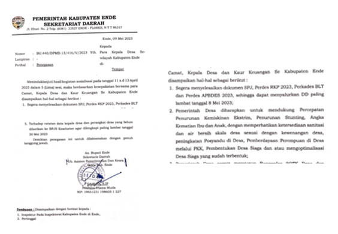
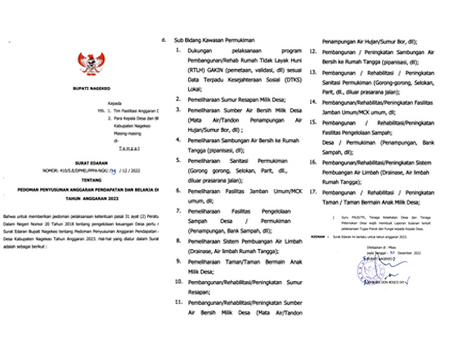
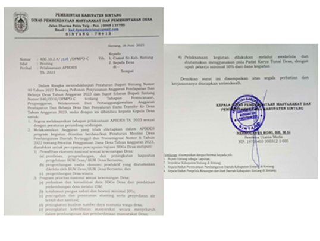
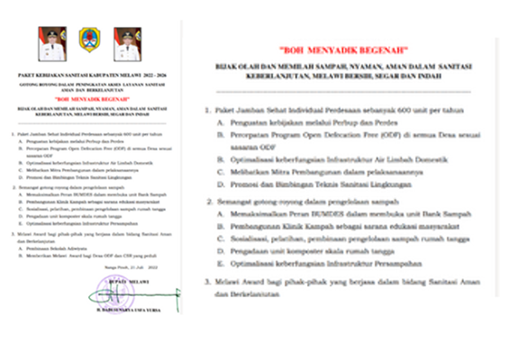
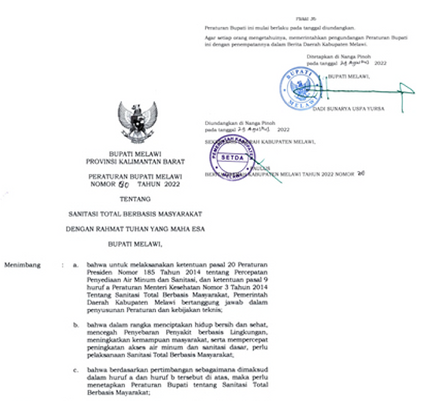

Real Impacts
Co-creation and collective effort produce real impacts.
Funding for water and sanitation is
growing.
Regional Government AMS Budget Trends
Funds mean little without the right policies. Collective effort has finally
moved local governments to issue valuable decisions for water.

Ende
Letter No. BU.440/DPMD.13/416/V/2023 (May 9, 2023) from the Head of DPMD directs faster completion of Village Fund documents and prioritizes their use for water and sanitation facilities.
Letter No. BU.440/DPMD.13/416/V/2023 (May 9, 2023) from the Head of DPMD directs faster completion of Village Fund documents and prioritizes their use for water and sanitation facilities.
Nagekeo
Letter No. 410./S.E/DPMD,PPPA-NGK/139/12/2002, issued by the Regent on December 30, 2022, sets guidelines for the 2023 Village Budget, directing residential spending to drinking water and sanitation facilities.

Letter No. 410./S.E/DPMD,PPPA-NGK/139/12/2002, issued by the Regent on December 30, 2022, sets guidelines for the 2023 Village Budget, directing residential spending to drinking water and sanitation facilities.

Sintang
Letter No. 400.10.2.4/014/DPMD-C, issued by the Head of DPMD on June 16, 2023, prioritizes Village Funds under the 2023 Village Budget for SDGs and national programs, including stunting prevention and the provision of clean water and sanitation.
Letter No. 400.10.2.4/014/DPMD-C, issued by the Head of DPMD on June 16, 2023, prioritizes Village Funds under the 2023 Village Budget for SDGs and national programs, including stunting prevention and the provision of clean water and sanitation.
Melawi
The 2022–2026 Sanitation Policy Package, Gotong Royong in Enhancing Access to Safe and Sustainable Sanitation Services (“Boh Menyadik Begenah”), was signed by the Regent on July 21, 2022. To follow up, Regent Regulation No. 80/2022 on Community-Based Total Sanitation (STBM) was issued on August 24, 2022. WVI supported its revision to detail funding sources for STBM and urged the district government to socialize the regulation in June 2023.

The 2022–2026 Sanitation Policy Package, Gotong Royong in Enhancing Access to Safe and Sustainable Sanitation Services (“Boh Menyadik Begenah”), was signed by the Regent on July 21, 2022. To follow up, Regent Regulation No. 80/2022 on Community-Based Total Sanitation (STBM) was issued on August 24, 2022. WVI supported its revision to detail funding sources for STBM and urged the district government to socialize the regulation in June 2023.

Regent Regulation No. 80/2022 on Community-Based Total Sanitation, issued on August 24,
2022, follows the 2022–2026 Sanitation Policy Package. WVI backed its revision to specify
funding sources and urged the district government to socialize it in June 2023.
At last, Emiliana is overjoyed to meet tirta.
“I’m happy because now we don’t have to walk far anymore to help our parents fetch water with
jerrycans. In the past, after school we had to walk quite a distance, but now we just open the
tap beside our house.”
-Emiliana

Before
After